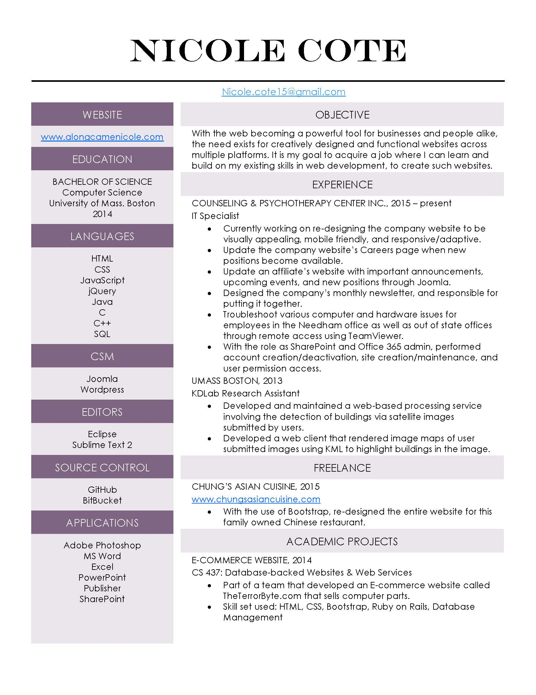

I love to code, play video games, read books, play the piano, ski & snowboard, and many other things...
I'm always looking to learn something new.
Welcome to my website. My name is Nicole Cote. I received a BS degree in Computer Science from the University of Massachusetts Boston. My passion is coding, and being able to learn new things along the way to expand my knowledge.
Learning something new can be very rewarding for myself and I would like to be able to display this for others to see. Please visit my Github page to see various projects I have worked on for fun, as well as my Portfolio section to see my web dev projects. One of my goals is to find a job where I can provide users a fun experience through my work.
Welcome to my Portfolio section.
Here is a list of websites I have worked on so far.
